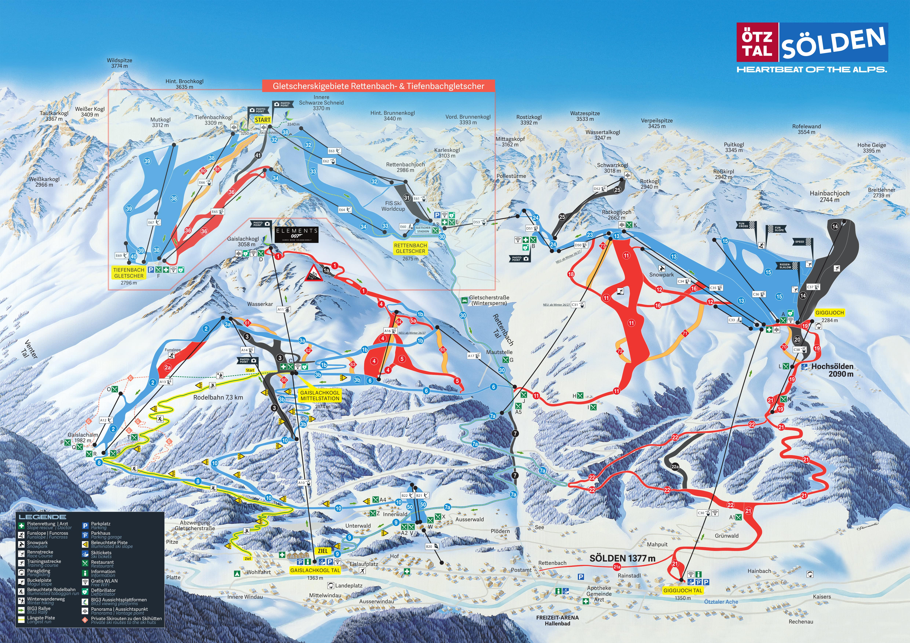

12/25 (五) 台北 → 慕尼黑（直飛約13hr）
傍晚抵達，前往市區入住
請假攻略：聖誕跨年黃金假期
2026年12/25（五）與2027年1/1（五）都是假日，中間只需請4天假即可享受10天連休。
機票分析
聖誕旺季機票比較。建議提早6個月以上預訂，並考慮不同城市進出（Open-jaw）節省交通時間。
精省轉機
~€1,060
酷航 Scoot
台北 TPE → 新加坡 SIN → 維也納 VIE
22-40 小時
- 最便宜的選擇
- 轉機時間長
- 廉航無免費餐飲與托運行李
- 需另購行李額（滑雪裝備重）
CP值最高
傳統航空轉機
~€1,160
中華航空 + 奧地利航空
台北 TPE → 曼谷 BKK → 維也納 VIE
17-28 小時
- 傳統航空服務品質
- 含免費餐飲與30kg行李
- 星空聯盟累積里程
- 需在曼谷轉機
直飛省時
~€1,260
長榮航空 EVA Air
台北 TPE → 維也納 VIE（直飛）
13-14 小時
- 直飛最省時
- 五星航空服務
- 價格較高
- 熱門日期易客滿
台灣出發省錢秘訣
Open-jaw 不同點進出
例如「慕尼黑進、布拉格出」，省下回程交通，票價僅貴5-15%。
例如「慕尼黑進、布拉格出」，省下回程交通，票價僅貴5-15%。
避開最貴日期
12/23-24出發最貴，建議12/20或12/25出發；回程避開12/31-1/1。
12/23-24出發最貴，建議12/20或12/25出發；回程避開12/31-1/1。
提早預訂
聖誕旺季建議提前6個月以上預訂，價格可便宜20-30%。
聖誕旺季建議提前6個月以上預訂，價格可便宜20-30%。
善用促銷
土航、阿聯酋轉機常有好價。長榮/華航也有歐洲航線促銷。
土航、阿聯酋轉機常有好價。長榮/華航也有歐洲航線促銷。
East Coast Direct
~€900
Austrian Airlines
New York JFK → Vienna VIE (Nonstop)
8h 10min
- Only nonstop US-Vienna route
- Short flight time
- Only from JFK
- Christmas peak prices surge
Best Value
East Coast via Hub
~€1,100
Lufthansa / Swiss / United
JFK/EWR → FRA/ZRH → VIE/MUC
10-14 hours
- Multiple daily options
- Open-jaw friendly
- Requires connection
West Coast
~€1,500
Lufthansa / United / Condor
LAX/SFO → FRA/MUC → VIE
13-16 hours
- Direct to Munich available
- Higher prices from West Coast
Tips for US Travelers
Open-jaw Tickets
Fly into Munich (MUC), out of Prague (PRG) or Budapest (BUD). Saves backtracking.
Fly into Munich (MUC), out of Prague (PRG) or Budapest (BUD). Saves backtracking.
East Coast Advantage
JFK/EWR have the cheapest and most direct options to Austria.
JFK/EWR have the cheapest and most direct options to Austria.
Book 3-6 Months Ahead
Christmas flights fill up fast. Set price alerts on Google Flights.
Christmas flights fill up fast. Set price alerts on Google Flights.
Budget Airlines
Icelandair (via Reykjavik) or Aer Lingus (via Dublin) for budget connections.
Icelandair (via Reykjavik) or Aer Lingus (via Dublin) for budget connections.
雪場比較：奧地利四大推薦
從CP值最高的家庭友善雪場到傳奇級專業滑雪勝地，以下四個雪場各有特色。價格為2025/2026旺季成人6日纜車票。
| 雪場 | 雪道總長 | 海拔 | 6日票 | 每km成本 | 適合 | CP值 |
|---|---|---|---|---|---|---|
| SkiWelt | 275 km | 620-1,957m | €372 | €1.35/km | 初中級/家庭 | |
| Saalbach | 270 km | 830-2,096m | €425 | €1.57/km | 中級/派對族 | |
| Sölden | 142 km | 1,350-3,340m | €432 | €3.04/km | 中高級/風景控 | |
| St. Anton | 305 km | 1,300-2,811m | €450 | €1.48/km | 中高級/專業 |
雪道難度分佈比較
奧地利採用三色分級系統：藍道 Blue（初級 Easy）、紅道 Red（中級 Intermediate）、黑道 Black（高級 Difficult）
關於「綠道」：奧地利不使用綠道分級。法國等國家有獨立的綠道（最初級），但在奧地利，初學者練習區（Übungswiese）通常不計入雪道總長度。奧地利的藍道已涵蓋初學者適合的緩坡，相當於法國系統中的綠道＋藍道。
SkiWelt 275 km
初中級天堂，藍紅道佔86%
Saalbach 270 km
最多藍道，初學者最友善
Sölden 146 km
黑道比例最高，挑戰性強
St. Anton 300 km
最大雪場，各級均衡＋豐富野雪
SkiWelt Wilder Kaiser - Brixental
CP值之王275km 雪道
90+座纜車
€372 /6日
奧地利最大的相連雪場之一，以超高CP值聞名。275公里雪道以藍線（42%）和紅線（44%）為主，非常適合初學者和家庭。涵蓋 Ellmau、Söll、Hopfgarten 等9個村莊。80%雪道有人造雪設備。
優點
- 全奧地利主要雪場中最便宜
- 面積廣大，5天滑不完
- 適合初中級與家庭旅遊
- 距慕尼黑僅1.5小時車程
缺點
- 海拔較低（最高1,957m），雪況受天氣影響
- 黑道僅39km（14%），高手不夠刺激
- Après-ski 氣氛較平淡
Saalbach-Hinterglemm (Skicircus)
中級天堂270km 雪道
70座纜車
€425 /6日
「奧地利最酷的滑雪馬戲團」，以現代化纜車和豐富藍道（52%）聞名。ALPIN CARD 可通用 Zell am See 和 Kitzsteinhorn 冰川。Après-ski 文化濃厚，年輕人最愛。90%雪道有人造雪設備。
優點
- 藍道最多（140km），初學者最友善
- 現代化高速纜車，排隊短
- Après-ski 氣氛極佳
- ALPIN CARD 可通用冰川
缺點
- 價格中高
- 黑道僅18km（7%），高手選擇少
- 聖誕旺季人潮多
Sölden
冰川壯景142km 雪道
31座纜車
€432 /6日
奧地利唯一擁有三座3,000m以上山峰的雪場。Rettenbach 和 Tiefenbach 雙冰川保證聖誕絕佳雪況。007電影拍攝地「ice Q」餐廳在山頂。黑道比例19%為四大雪場最高。
優點
- 雙冰川保證雪況，海拔達3,340m
- 007電影拍攝地，景觀壯麗
- 黑道比例最高（19%）
- 距因斯布魯克僅1小時
缺點
- 雪道僅142km，較短
- 每km成本最高
- 高海拔天氣多變
St. Anton am Arlberg
傳奇雪場305km 雪道
88座纜車
€450 /6日
Arlberg 是奧地利最大相連雪場，全球頂級滑雪勝地。以傳奇 Après-ski 文化（Mooservirt 酒吧）和豐富野雪路線聞名。305km雪道涵蓋 St. Anton、Lech、Zürs 等村莊，各級均衡分佈。
優點
- 奧地利最大相連雪場（305km）
- 傳奇 Après-ski 文化
- 47km黑道＋豐富野雪
- 各級雪道均衡，適合混合程度團體
缺點
- 全奧地利最貴
- 野雪區需經驗，純新手慎選
- 聖誕期間極度擁擠
雪場地圖 Piste Maps
點擊圖片可放大查看完整雪道地圖
SkiWelt Wilder Kaiser - Brixental

Saalbach-Hinterglemm (Skicircus)

Sölden

St. Anton am Arlberg

雪場位置地圖
滑雪學校：課程與費用
奧地利擁有世界頂級的滑雪教學體系。無論是第一次踏上雪板的初學者，還是想精進技術的進階滑雪者，都能找到合適的課程。
滑雪程度定義
綠道 Green / Anfänger
Beginner
第一次滑雪或僅有1-2次經驗。正在學習基本站姿、煞車（雪犁/Pizza）和緩坡轉彎。需要在魔毯或初學者纜車區域練習。
建議課程：團體初學者課程 3-5天
藍道 Blue / Leicht Fortgeschritten
Intermediate
能自信地以雪犁轉彎，正在學習平行轉彎（Parallel Turn）。可以在緩坡藍道上獨立滑行，但陡坡仍需雪犁輔助。
建議課程：團體中級課程 3天 或 私人課 2-3小時
紅道 Red / Fortgeschritten
Advanced
能在大多數雪道上平行轉彎。正在精進 Carving（刻滑）技術、速度控制和在較陡地形上的穩定性。可以應對中等難度的紅道。
建議課程：私人課 2-3小時 或 進階技術團體課
黑道 Black / Könner
Expert
能自信地在所有標記雪道上滑行。想挑戰野雪（Off-piste）、饅頭雪（Moguls）、陡坡和深雪。追求速度與風格的極致。
建議課程：Freeride 私人課 或 Off-piste 導覽
各雪場滑雪學校費用比較（成人）
| 課程類型 | SkiWelt | Saalbach | Sölden | St. Anton |
|---|---|---|---|---|
| 團體半天 2.5-3hr/天 |
~€90/天 | €95/天 | €90/天 | ~€110/天 |
| 團體半天 5日 最常見方案 |
~€290 | €315 | €290 | ~€360 |
| 團體全天 4-5hr/天 |
~€100/天 | - | €100/天 | ~€130/天 |
| 私人課 2hr | ~€190 | €204 | €150 | ~€250 |
| 私人課 半天 3-4hr |
~€280 | ~€300 | €240 | ~€380 |
| 初學者套裝 含租借+課程+初學纜車 |
~€428 5天課+7天租借 |
€395 4天課+4天租借+2天初學纜車 |
€459 5天課+6天租借 |
~€500 5天課+租借 |
選課建議
初學者首選：團體課 3-5天
團體課最划算，3天通常能學會基本轉彎。5天課程結束後可獨立滑藍道。建議搭配初學者套裝（含租借）最省。
團體課最划算，3天通常能學會基本轉彎。5天課程結束後可獨立滑藍道。建議搭配初學者套裝（含租借）最省。
中級進階：私人課 2-3小時
已會基本轉彎但想突破瓶頸？2-3小時私人課比5天團體課更有效率。3-4人分攤費用，每人僅€50-80。
已會基本轉彎但想突破瓶頸？2-3小時私人課比5天團體課更有效率。3-4人分攤費用，每人僅€50-80。
高手挑戰：Freeride 導覽
Sölden 和 St. Anton 提供 Freeride 私人課（5hr ~€330），由專業嚮導帶領探索野雪路線。需有黑道以上程度。
Sölden 和 St. Anton 提供 Freeride 私人課（5hr ~€330），由專業嚮導帶領探索野雪路線。需有黑道以上程度。
省錢秘訣
提前2-3個月線上預訂可享10-20%折扣。聖誕高峰期（12/25-1/1）價格上浮10-20%，建議避開12/25-27開課。私人課多人分攤最划算。
提前2-3個月線上預訂可享10-20%折扣。聖誕高峰期（12/25-1/1）價格上浮10-20%，建議避開12/25-27開課。私人課多人分攤最划算。
歐洲平價雪場：跳脫奧地利的選擇
奧地利雪場設施一流但價格較高。如果預算有限，歐洲還有許多CP值極高的滑雪勝地。以下比較涵蓋東歐、安道爾、斯洛維尼亞等地，從每日總花費（纜車＋住宿＋餐飲）來看，最便宜的選項只要奧地利的一半！
每日總花費比較（每人）
包含纜車票＋住宿＋三餐，以歐元估算
推薦平價雪場詳細比較
Bansko 班斯科
🇧🇬 保加利亞 България 最佳CP值雪道70 km
海拔990-2,560m
日票NT$1,960
租借/日NT$560
● 8藍
● 11紅
● 2黑
優點
食物超便宜（一餐€10）、啤酒€2、纜車直達市區、雪場設施現代化、有夜生活
食物超便宜（一餐€10）、啤酒€2、纜車直達市區、雪場設施現代化、有夜生活
缺點
海拔較低雪況不穩、專家級地形有限、纜車排隊長、離索菲亞機場2.5小時
海拔較低雪況不穩、專家級地形有限、纜車排隊長、離索菲亞機場2.5小時
✈ 索菲亞 SOF → 巴士2.5hr（€10）或包車（€80）
Jasná 亞斯納
🇸🇰 斯洛伐克 Slovensko 進階推薦雪道52 km
海拔943-2,024m
日票NT$2,275
6日票NT$10,850
● 藍道
● 紅道
● 黑道（認真的黑道）
優點
真正的高山滑雪（2000m峰頂）、黑道有挑戰性、人少不擁擠、啤酒€2.5
真正的高山滑雪（2000m峰頂）、黑道有挑戰性、人少不擁擠、啤酒€2.5
缺點
交通不便（需從布拉提斯拉瓦或克拉科夫轉車）、住宿選擇較少且較貴
交通不便（需從布拉提斯拉瓦或克拉科夫轉車）、住宿選擇較少且較貴
✈ 布拉提斯拉瓦 BTS 或克拉科夫 KRK → 火車+巴士 3-4hr
Grandvalira 格蘭瓦利拉
🇦🇩 安道爾 Andorra 最大雪場雪道210 km
海拔1,710-2,640m
日票NT$2,415
6日票NT$12,950
● 綠道（有！）
● 藍道
● 紅道
● 黑道
優點
210km超大雪場、免稅購物天堂、有綠道（法國系統）、現代纜車、雪況好
210km超大雪場、免稅購物天堂、有綠道（法國系統）、現代纜車、雪況好
缺點
無機場需從巴塞隆納/土魯斯轉車3hr、聖誕假期人潮多、物價比東歐高
無機場需從巴塞隆納/土魯斯轉車3hr、聖誕假期人潮多、物價比東歐高
✈ 巴塞隆納 BCN 或土魯斯 TLS → 巴士/包車 3hr
Borovets 博羅維茨
🇧🇬 保加利亞 България 初學者友善雪道58 km
海拔1,390-2,560m
日票NT$1,750
租借/日NT$560
● 寬闊藍道
● 紅道
● 少量黑道
優點
保加利亞最大最老雪場、含早晚餐飯店€64/晚、夜生活熱鬧、雪道寬適合初學
保加利亞最大最老雪場、含早晚餐飯店€64/晚、夜生活熱鬧、雪道寬適合初學
缺點
設施較老舊、專家地形有限、離索菲亞1.5hr
設施較老舊、專家地形有限、離索菲亞1.5hr
✈ 索菲亞 SOF → 巴士1.5hr
Zakopane 扎科帕內
🇵🇱 波蘭 Polska 纜車最便宜雪道~20 km
海拔850-1,987m
日票NT$1,400
啤酒NT$70
● 多個小雪場
● 紅道
● Kasprowy Wierch 黑道
優點
歐洲最便宜纜車票之一（€37-40）、克拉科夫2hr可達、波蘭美食便宜又好吃
歐洲最便宜纜車票之一（€37-40）、克拉科夫2hr可達、波蘭美食便宜又好吃
缺點
雪場分散且小、低海拔雪況不穩、Kasprowy Wierch 僅天然雪時開放
雪場分散且小、低海拔雪況不穩、Kasprowy Wierch 僅天然雪時開放
✈ 克拉科夫 KRK → 滑雪巴士 2hr（€7）
Poiana Brașov 波亞納布拉索夫
🇷🇴 羅馬尼亞 România 最美風景雪道25 km
海拔1,020-1,799m
日票NT$1,645
住宿/晚NT$1,925
● 藍道為主
● 紅道
● 夜間滑雪
優點
特蘭西瓦尼亞絕美風景、布拉索夫古城超值得逛、食物酒水超便宜、有夜間滑雪
特蘭西瓦尼亞絕美風景、布拉索夫古城超值得逛、食物酒水超便宜、有夜間滑雪
缺點
雪場小（25km）、纜車老舊、離布加勒斯特機場較遠
雪場小（25km）、纜車老舊、離布加勒斯特機場較遠
✈ 布加勒斯特 OTP → 火車到 Brașov（€8, 2.5hr）
Kranjska Gora 克拉尼斯卡戈拉
🇸🇮 斯洛維尼亞 Slovenija 近布萊德湖雪道20 km
海拔810-1,295m
日票NT$1,715
6日票NT$8,330
● 初中級
● 紅道
● 世界盃黑道
優點
朱利安阿爾卑斯山美景、世界盃賽道、1hr到盧比安納機場、布萊德湖近在咫尺
朱利安阿爾卑斯山美景、世界盃賽道、1hr到盧比安納機場、布萊德湖近在咫尺
缺點
雪場小（20km）、海拔低、住宿不算便宜（€100+/晚）
雪場小（20km）、海拔低、住宿不算便宜（€100+/晚）
✈ 盧比安納 LJU → 開車/巴士 1hr
Gudauri 古道里
🇬🇪 喬治亞 საქართველო 全歐最便宜雪道35 km
海拔1,993-3,276m
日票NT$805
租借/日NT$420
● 藍道
● 紅道
● 黑道＋野雪
優點
全歐洲最便宜（日票€23！）、高海拔雪況好（3,276m）、喬治亞美食超讚、啤酒€2
全歐洲最便宜（日票€23！）、高海拔雪況好（3,276m）、喬治亞美食超讚、啤酒€2
缺點
地理位置偏遠（高加索山脈）、基礎設施有限、從台灣/美國飛很遠
地理位置偏遠（高加索山脈）、基礎設施有限、從台灣/美國飛很遠
✈ 提比里斯 TBS → 開車/包車 2hr
綜合比較總表
| 雪場 | 國家 | 雪道 | 海拔最高 | 日票 | 住宿/晚 | 一餐 | 每日總花費 | vs 奧地利 |
|---|---|---|---|---|---|---|---|---|
| Gudauri | 🇬🇪 喬治亞 | 35km | 3,276m | NT$805 | NT$1,750 | NT$280 | NT$3,080 | 省52% |
| Borovets | 🇧🇬 保加利亞 | 58km | 2,560m | NT$1,750 | NT$1,575 | NT$350 | NT$3,850 | 省40% |
| Zakopane | 🇵🇱 波蘭 | ~20km | 1,987m | NT$1,400 | NT$1,925 | NT$420 | NT$3,850 | 省40% |
| Poiana Brașov | 🇷🇴 羅馬尼亞 | 25km | 1,799m | NT$1,645 | NT$1,925 | NT$350 | NT$4,095 | 省36% |
| Bansko | 🇧🇬 保加利亞 | 70km | 2,560m | NT$1,960 | NT$1,750 | NT$385 | NT$4,235 | 省34% |
| Vogel | 🇸🇮 斯洛維尼亞 | 22km | 1,800m | NT$1,575 | NT$2,625 | NT$700 | NT$5,075 | 省20% |
| Jasná | 🇸🇰 斯洛伐克 | 52km | 2,024m | NT$2,275 | NT$2,800 | NT$525 | NT$5,775 | 省9% |
| Grandvalira | 🇦🇩 安道爾 | 210km | 2,640m | NT$2,415 | NT$2,800 | NT$700 | NT$6,090 | 省4% |
| SkiWelt | 🇦🇹 奧地利 | 275km | 1,957m | NT$2,170 | NT$3,150 | NT$875 | NT$6,370 | 基準 |
| St. Anton | 🇦🇹 奧地利 | 305km | 2,811m | NT$2,625 | NT$4,200 | NT$1,050 | NT$8,050 | +26% |
結論：怎麼選？
預算最低 → Bansko 🇧🇬
70km雪道＋超便宜的食宿＋有纜車直達市區。CP值之王，5天滑雪含吃住只要奧地利的6成。適合初中級滑雪者和想省錢的團體。
雪場最大 → Grandvalira 🇦🇩
210km雪道接近奧地利水準，價格卻便宜一些。免稅購物是額外福利。適合想要大雪場體驗但預算有限的人。
進階挑戰 → Jasná 🇸🇰
真正的高山滑雪體驗，黑道有挑戰性。價格比奧地利便宜但差距不大。適合中高級滑雪者想嘗試不同風格。
結合旅遊 → Kranjska Gora 🇸🇮 或 Poiana Brașov 🇷🇴
雪場小但周邊旅遊資源豐富（布萊德湖、特蘭西瓦尼亞）。適合滑雪2-3天＋旅遊的混合行程。
北美平價雪場：美國＆加拿大的選擇
北美大型雪場（Vail、Whistler）日票動輒 US$200-300，但仍有許多高CP值的選擇。以下比較美國與加拿大的平價雪場，並與歐洲做跨洲對比。
歐洲 vs 北美：關鍵數據
NT$7,140
北美前10大雪場
平均日票
平均日票
NT$2,695
歐洲前10大雪場
平均日票
平均日票
~500
北美雪場數量
服務 3.3 億人
服務 3.3 億人
~4,000
歐洲雪場數量
服務 4.5 億人
服務 4.5 億人
每日總花費比較（每人）
包含纜車票＋住宿＋三餐
推薦北美平價雪場詳細比較
Brian Head 布萊恩黑德
🇺🇸 猶他州 Utah 最佳CP值雪道71 runs / 650 acres
海拔2,926-3,328m
日票NT$1,610
年降雪914cm
● 30%初級
● 35%中級
● 35%高級
優點
日票最低$29起、12歲以下免費、近Zion/Bryce國家公園、猶他粉雪品質佳、夜間滑雪
日票最低$29起、12歲以下免費、近Zion/Bryce國家公園、猶他粉雪品質佳、夜間滑雪
缺點
雪場規模較小、離鹽湖城3.5hr、住宿選擇有限、非大型度假村等級
雪場規模較小、離鹽湖城3.5hr、住宿選擇有限、非大型度假村等級
✈ 拉斯維加斯 LAS → 開車 3hr / 鹽湖城 SLC → 開車 3.5hr
Ski Cooper 滑雪庫柏
🇺🇸 科羅拉多州 Colorado 高海拔粉雪雪道64 runs / 480 acres
海拔3,200-3,566m
日票NT$1,575
年降雪660cm
● 18%初級
● 26%中級
● 32%高級
● 24%專家
優點
平日僅$49、科羅拉多最高海拔之一、100%天然雪、免費停車、不擁擠
平日僅$49、科羅拉多最高海拔之一、100%天然雪、免費停車、不擁擠
缺點
雪場小、離丹佛2.5hr、無夜間滑雪、設施較基本
雪場小、離丹佛2.5hr、無夜間滑雪、設施較基本
✈ 丹佛 DEN → 開車 2.5hr（I-70 → US-24）
Powder Mountain 粉雪山
🇺🇸 猶他州 Utah 北美最大雪道162 runs / 8,484 acres
海拔2,103-2,713m
日票NT$2,380
年降雪1,270cm
● 25%初級
● 40%中級
● 35%高級
優點
北美最大雪場（8,484英畝）、每日限售1,500張票、粉雪品質頂級、夜間滑雪
北美最大雪場（8,484英畝）、每日限售1,500張票、粉雪品質頂級、夜間滑雪
缺點
動態定價票價浮動、山路冬季較難開、住宿選擇少、纜車速度慢
動態定價票價浮動、山路冬季較難開、住宿選擇少、纜車速度慢
✈ 鹽湖城 SLC → 開車 1hr（55 miles）
Bridger Bowl 布里傑碗
🇺🇸 蒙大拿州 Montana 極限地形雪道75+ runs / 2,000 acres
海拔1,859-2,652m
日票NT$2,625
年降雪889cm
● 25%初級
● 35%中級
● 30%高級
● 10%極限
優點
非營利社區經營、The Ridge極限地形、350吋天然雪、線上購票省$15
非營利社區經營、The Ridge極限地形、350吋天然雪、線上購票省$15
缺點
纜車較老舊、離大城市遠、住宿需在Bozeman、無夜間滑雪
纜車較老舊、離大城市遠、住宿需在Bozeman、無夜間滑雪
✈ Bozeman BZN → 開車 30min（16 miles）
Mont-Sainte-Anne 聖安妮山
🇨🇦 魁北克省 Québec 加東首選雪道71 runs / 460 acres
海拔175-800m
日票NT$2,625
垂直落差625m
● 21%初級
● 27%中級
● 19%高級
● 33%專家
優點
近魁北克市（30min）、夜間滑雪、法語文化體驗、加東最大垂直落差之一
近魁北克市（30min）、夜間滑雪、法語文化體驗、加東最大垂直落差之一
缺點
海拔低雪質不穩、需人造雪、東岸天氣多變、英語不太通
海拔低雪質不穩、需人造雪、東岸天氣多變、英語不太通
✈ 魁北克市 YQB → 開車 30min / 蒙特婁 YUL → 開車 3.5hr
Red Mountain 紅山
🇨🇦 卑詩省 British Columbia 隱藏寶石雪道119 runs / 3,850 acres
海拔1,185-2,075m
日票NT$3,325
年降雪762cm
● 20%初級
● 35%中級
● 45%高級
優點
3,850英畝超大地形、119條雪道、Rossland小鎮氛圍佳、不擁擠
3,850英畝超大地形、119條雪道、Rossland小鎮氛圍佳、不擁擠
缺點
交通不便（離最近機場2hr+）、住宿有限、設施較基本
交通不便（離最近機場2hr+）、住宿有限、設施較基本
✈ 斯波坎 GEG → 開車 3.5hr / 卡加利 YYC → 開車 7hr
Season Pass 省錢密技
Epic Pass
NT$33,390
42個雪場無限滑（含Vail、Whistler、歐洲Verbier等）。滑5天以上即回本。
Ikon Pass
NT$32,760
50個雪場（含Jackson Hole、Banff、Chamonix等）。適合喜歡多元體驗的滑雪者。
Mountain Collective
NT$21,245
25個雪場各2天（含Banff、Revelstoke等）。適合旅行式滑雪。
跨洲比較總表
| 雪場 | 國家 | 雪道規模 | 日票 | 住宿/晚 | 每日總花費 | vs 奧地利 |
|---|---|---|---|---|---|---|
| Bansko | 🇧🇬 保加利亞 | 70km | NT$1,960 | NT$1,120 | NT$2,555 | 省60% |
| Zakopane | 🇵🇱 波蘭 | ~20km | NT$1,400 | NT$1,225 | NT$3,850 | 省40% |
| Brian Head | 🇺🇸 猶他 | 71 runs | NT$1,610 | NT$1,925 | NT$4,760 | 省25% |
| Ski Cooper | 🇺🇸 科羅拉多 | 64 runs | NT$1,575 | NT$1,925 | NT$5,390 | 省15% |
| Bridger Bowl | 🇺🇸 蒙大拿 | 75+ runs | NT$2,625 | NT$2,065 | NT$5,880 | 省8% |
| SkiWelt | 🇦🇹 奧地利 | 275km | NT$2,170 | NT$3,150 | NT$6,370 | 基準 |
| Powder Mtn | 🇺🇸 猶他 | 8,484 acres | NT$2,380 | NT$2,380 | NT$6,685 | +5% |
| Red Mountain | 🇨🇦 BC | 3,850 acres | NT$3,325 | NT$2,065 | NT$6,685 | +5% |
| Vail | 🇺🇸 科羅拉多 | 5,317 acres | NT$8,890 | NT$6,370 | NT$16,205 | +154% |
結論：北美 vs 歐洲怎麼選？
從台灣出發 → 歐洲更划算
台灣飛歐洲與飛北美的機票價差不大（約NT$35,000-45,000），但歐洲的雪場票價、住宿、餐飲全面便宜。東歐雪場更是只要北美的一半。
從美國出發 → 北美平價雪場值得考慮
省去跨洲機票，Brian Head、Ski Cooper 等平價雪場每日花費可控制在 US$150-180。搭配 Epic/Ikon Pass 更划算。
追求極致CP值 → 東歐（保加利亞/波蘭）
Bansko 每日總花費約 €73（NT$2,555），是北美平價雪場的一半、奧地利的 40%。食宿超便宜是最大優勢。
追求粉雪體驗 → 猶他/蒙大拿
Powder Mountain 年降雪 1,270cm、Bridger Bowl 350吋天然雪。北美西部的粉雪品質是歐洲難以匹敵的。
亞洲雪場：日本＆韓國的選擇
離台灣最近的粉雪天堂，飛行時間僅 2.5~4 小時
🌏 亞洲 vs 歐洲 vs 北美：關鍵數據
| 指標 | 🇯🇵 日本 | 🇰🇷 韓國 | 🇦🇹 奧地利 | 🇺🇸 北美 |
|---|---|---|---|---|
| 從台灣飛行時間 | 3~4 小時 | 2.5 小時 | 12~14 小時 | 14~18 小時 |
| 平均日票 | €45 | €55 | €62 | €95 |
| 每日總花費 | €130 | €115 | €182 | €250 |
| 雪質 | ⭐⭐⭐⭐⭐ 粉雪天堂 | ⭐⭐⭐ 人造+天然 | ⭐⭐⭐⭐ 阿爾卑斯乾雪 | ⭐⭐⭐⭐ 因地區而異 |
| 雪場規模 | 中型（50~130km） | 小型（18~29km） | 大型（144~305km） | 大型（因雪場而異） |
| Snowboard 友善度 | ⭐⭐⭐⭐⭐ | ⭐⭐⭐⭐ | ⭐⭐⭐⭐ | ⭐⭐⭐⭐⭐ |
| 適合藍紅道程度 | ⭐⭐⭐⭐⭐ | ⭐⭐⭐⭐ | ⭐⭐⭐⭐⭐ | ⭐⭐⭐⭐ |
| 語言友善度 | ⭐⭐⭐⭐ 英日文 | ⭐⭐⭐ 韓英文 | ⭐⭐⭐⭐ 德英文 | ⭐⭐⭐⭐⭐ 英文 |
🇯🇵 日本雪場 — 粉雪天堂
日本擁有世界頂級的粉雪（Japow），加上溫泉、美食、文化體驗，是台灣人滑雪的首選目的地。所有雪場都歡迎 Ski 和 Snowboard。
Niseko United
ニセコユナイテッド
粉雪聖地
位置北海道 Hokkaido
雪道30+ 條 / ~50km
落差994m
年降雪14~18m 🤯
日票
€72
7日票
€420
租借/日
€33
每日總花費
€180
🎿 Ski ✓
🏂 Snowboard ✓
Terrain Park ⭐⭐⭐⭐⭐
✅ 世界級粉雪、英語友善、Hanazono 頂級 Terrain Park、夜生活豐富
❌ 日本最貴、旺季擁擠、離東京遠（需飛札幌）
🎯 藍紅道適合度：⭐⭐⭐⭐ — 中級地形豐富，但部分區域偏陡
Hakuba Valley
白馬バレー
奧運聖地
位置長野 Nagano
雪道200+ 條 / ~130km
落差1,071m
年降雪10~12m
日票
€62
7日票
€419
租借/日
€33
每日總花費
€156
🎿 Ski ✓
🏂 Snowboard ✓
Terrain Park ⭐⭐⭐⭐⭐ (Hakuba47)
✅ 日本最大雪場、1998奧運場地、Hakuba47 頂級 Park、地形多樣
❌ 各雪場分散需搭巴士、週末擁擠、住宿偏貴
🎯 藍紅道適合度：⭐⭐⭐⭐⭐ — Goryu/Norikura 超適合中級，選擇多
Nozawa Onsen
野沢温泉
🏆 最佳CP值
位置長野 Nagano
雪道36 條 / ~50km
落差1,085m
年降雪10~13m
日票
€41
7日票
€246
租借/日
€33
每日總花費
€120
🎿 Ski ✓
🏂 Snowboard ✓
Terrain Park ⭐⭐⭐
✅ 傳統溫泉村、13座免費公共溫泉、CP值最高、文化體驗獨特
❌ 雪場較小、英語有限、山路陡峭
🎯 藍紅道適合度：⭐⭐⭐⭐⭐ — 初中級地形佔 70%，非常適合
Furano
富良野スキー場
家庭首選
位置北海道 Hokkaido
雪道28 條 / ~25km
落差964m
年降雪8~10m
日票
€39
7日票
€234
租借/日
€30
每日總花費
€108
🎿 Ski ✓
🏂 Snowboard ✓
Terrain Park ⭐⭐⭐
✅ 北海道最便宜、人少粉雪好、家庭友善、風景優美
❌ 雪場較小、夜生活少、交通不便
🎯 藍紅道適合度：⭐⭐⭐⭐⭐ — 80% 初中級地形，完美匹配
Myoko Kogen
妙高高原
隱藏寶石
位置新潟 Niigata
雪道~50 條 / ~45km
落差~900m
年降雪15m+ 🤯
日票
€37
租借/日
€30
每日總花費
€100
🎿 Ski ✓
🏂 Snowboard ✓
Terrain Park ⭐⭐⭐
✅ 日本降雪量最大、最便宜、人少、溫泉文化
❌ 知名度低、英語有限、各雪場分散
🎯 藍紅道適合度：⭐⭐⭐⭐ — 中級地形豐富，適合探索
🇰🇷 韓國雪場 — 最近最快
韓國是離台灣最近的滑雪目的地（飛行僅 2.5 小時），適合短天數的滑雪旅行。雪場規模較小但設施現代，所有雪場都歡迎 Snowboard。
Yongpyong Resort
용평리조트（龍平）
奧運場地
位置平昌 Pyeongchang
雪道28 條 / 29.1km
落差~750m
特色2018冬奧場地
日票
€66
半日票
€47
租借/日
€33
每日總花費
€128
🎿 Ski ✓
🏂 Snowboard ✓
Terrain Park ⭐⭐⭐
✅ 韓國最大、2018奧運場地、Rainbow Zone 進階地形佳、首爾交通方便
❌ 週末超擁擠、人造雪為主、雪道短
🎯 藍紅道適合度：⭐⭐⭐⭐ — Red/Silver Zone 適合中級
High1 Resort
하이원리조트
Ski-in/Ski-out
位置旌善 Jeongseon
雪道18 條 / ~18km
落差~600m
特色韓國最高海拔
全日票
€71
5小時票
€51
租借/日
€30
每日總花費
€117
🎿 Ski ✓
🏂 Snowboard ✓
Terrain Park ⭐⭐⭐
✅ Ski-in/Ski-out、人少安靜、中級地形多、彈性計時票
❌ 交通不便（需自駕）、周邊活動少、雪場小
🎯 藍紅道適合度：⭐⭐⭐⭐⭐ — 45% 中級地形，最適合你們
Phoenix Pyeongchang
피닉스 평창
均衡選擇
位置平昌 Pyeongchang
雪道21 條
特色度假村設施完善
日票
€62
租借/日
€28
每日總花費
€108
🎿 Ski ✓
🏂 Snowboard ✓
Terrain Park ⭐⭐⭐
✅ 設施完善、中級地形好、近 Yongpyong 可搭配
❌ 規模較小、進階地形有限
🎯 藍紅道適合度：⭐⭐⭐⭐ — 75% 初中級，適合
Vivaldi Park
비발디파크
離首爾最近
位置洪川 Hongcheon
雪道12 條
特色首爾 1.5hr 直達
日票
€55
租借/日
€25
每日總花費
€91
🎿 Ski ✓
🏂 Snowboard ✓
Terrain Park ⭐⭐
✅ 離首爾最近、最便宜、有水上樂園、初學者友善
❌ 非常擁擠、雪場小、進階地形少
🎯 藍紅道適合度：⭐⭐⭐ — 偏初級，紅道程度可能覺得不夠
🎓 亞洲滑雪學校費用比較（Ski & Snowboard）
| 課程類型 | 🇯🇵 日本 | 🇰🇷 韓國 | 🇦🇹 奧地利 |
|---|---|---|---|
| 團體課（2-3hr） | €42 | €35 | €65 |
| 私人課（半日） | €120 | €105 | €200 |
| 英語教練 | ✅ 主要雪場有 | ⚠️ 部分有 | ✅ 普遍 |
| 中文教練 | ⚠️ 少數 | ✅ 較多 | ❌ 極少 |
| Snowboard 課程 | ✅ 普遍 | ✅ 普遍 | ✅ 普遍 |
🗺️ 亞洲雪場位置地圖
🔴 日本雪場 | 🔵 韓國雪場 | ✈️ 台北出發地
🏆 亞洲雪場總結推薦
🥇
最適合你們（藍紅道 Ski & Snowboard）
Nozawa Onsen 或 Furano — CP值最高，初中級地形豐富，加上溫泉文化體驗
💰
預算最低
Vivaldi Park（韓國）— 每日 ~NT$3,200，但雪場小。日本選 Myoko 或 Furano
🏂
Snowboard 最佳
Hakuba（Hakuba47）或 Niseko（Hanazono）— 亞洲最頂級 Terrain Park
⏱️
最省時間（短假期）
韓國 Yongpyong — 台灣飛 2.5hr + 車程 2.5hr，週五晚出發週日回
❄️
最佳雪質
Niseko — 世界公認最佳粉雪，年降雪 14~18 公尺
🌏
vs 歐洲的選擇
亞洲雪場較小但便宜 30-50%、飛行時間省 10+ 小時。歐洲勝在雪場規模和城市旅遊結合
滑雪進階攻略
從藍道到紅道的技術提升、Ski vs Snowboard 比較、高山症預防
📊 你們的程度：藍道～紅道
🎿 藍道 → 紅道 關鍵技術
1
平行轉彎 Parallel Turns
藍道：可能還在用 V 字型（Snowplough）減速
紅道需要：雙板保持平行，用重心轉移來轉彎。這是從初級到中級最關鍵的突破。
💡 練習方法：在藍道上刻意保持雙板平行，不用 V 字型
2
邊刃控制 Edge Control
藍道：主要靠板底平滑
紅道需要：用板邊（edge）切入雪面控制速度和方向。紅道更陡，沒有邊刃控制會失速。
💡 練習方法：在藍道上練習側滑（sideslip），感受邊刃的咬合
3
速度管理 Speed Control
藍道：坡度緩，自然減速
紅道需要：主動用轉彎來控制速度。紅道坡度 20-35%，不轉彎會越來越快。
💡 練習方法：練習短彎（short turns），每次轉彎都是在減速
4
地形判讀 Terrain Reading
藍道：地形平坦單純
紅道需要：會有陡坡、窄道、結冰面。學會提前觀察，選擇最佳路線。
💡 練習方法：停下來觀察前方地形，規劃 2-3 個轉彎的路線
⏱️ 進階時間參考
* 累積天數，非連續。有教練指導可加速 30-50%
🎿 vs 🏂 Ski vs Snowboard 完整比較
| 比較面向 | 🎿 Ski 雙板 | 🏂 Snowboard 單板 |
|---|---|---|
| 初學難度 | ★★☆☆☆ 較容易上手 第一天就能滑緩坡 |
★★★★☆ 前2天較痛苦 大量摔倒是正常的 |
| 進階難度 | ★★★★☆ 精通較難 平行轉彎需要時間 |
★★★☆☆ 突破後進步快 一旦會轉彎就很快 |
| 摔倒方式 | 較少摔，但摔倒時膝蓋風險較高 | 頻繁摔，手腕和尾椎風險較高 ⚠️ 強烈建議戴護腕和護臀 |
| 搭纜車 | ✅ 較容易，直接站上去 | ⚠️ 需解開一腳，上下較麻煩 |
| 平地移動 | ✅ 可以直接走/滑 | ❌ 需解板步行，平地很痛苦 |
| 粉雪體驗 | 需要技術才能享受 | ✅ 天生適合粉雪，超爽 |
| Terrain Park | 可以玩，但較少人 | ✅ Snowboard 的主場 |
| 裝備重量 | 較重（板+靴+杖） | 較輕（板+靴） |
| 租借費/天 | NT$1,050~1,575 | NT$1,050~1,575 |
| 適合你們嗎？ | ✅ 藍紅道程度，各種地形都能享受 | ✅ 藍紅道程度，粉雪和Park特別爽 |
🏂 各雪場 Snowboard 友善度
SkiWelt
3個 Fun Park、Boardercross、平地少
Saalbach
Nightpark、多個Park、Snowboard 聖地
Sölden
Area 47 Snowpark、但有些平路段
St. Anton
Off-piste 天堂、但部分連接道平坦
🏔️ 高山症預防
⚠️ 海拔風險等級
1,000-2,000m 安全
大部分雪場基地（SkiWelt 620m、Saalbach 1,003m）
2,000-2,500m 輕微注意
大部分雪場山頂（SkiWelt 1,957m、Saalbach 2,096m）
2,500-3,500m 需要注意
Sölden 山頂 3,340m、St. Anton 山頂 2,811m
🛡️ 預防措施
- 多喝水：每天 3-4 公升，高海拔空氣乾燥脫水快
- 第一天放慢：不要第一天就衝最高點
- 避免酒精：前 1-2 天減少飲酒（雖然很難 😅）
- 充足睡眠：疲勞會加重高山反應
- 注意症狀：頭痛、噁心、疲勞、失眠 → 下降休息
💡 好消息：大部分奧地利雪場基地在 1,000-1,500m，只有滑到山頂時才會短暫到 2,500m+，不會長時間停留，風險較低。台灣人如果有爬過合歡山（3,417m），這裡完全沒問題。
城市景點：中歐必訪城市
每座城市都有獨特的聖誕氛圍與文化體驗。以下包含各城市的當地名稱（鄉土名情）、必訪景點與聖誕市集資訊。
維也納
Wien奧地利 Österreich音樂之都，擁有華麗的哈布斯堡王朝宮殿、世界級歌劇院。咖啡館文化為UNESCO非物質文化遺產。
美泉宮Schloss Schönbrunn
哈布斯堡夏宮，UNESCO世界遺產。聖誕市集在宮前廣場舉行。
聖史蒂芬大教堂Stephansdom
維也納地標，哥德式建築傑作。登南塔俯瞰全城。
霍夫堡皇宮Hofburg
哈布斯堡冬宮，內有西西公主博物館。
納許市場Naschmarkt
維也納最大露天市場，各國美食寶庫。
聖誕市集
市政廳廣場 (Rathausplatz) 聖誕市集為全歐最大之一。美泉宮前也有市集至1月初。
薩爾茲堡
Salzburg奧地利 Österreich莫札特故鄉，《乃乃乃》電影取景地。舊城區為UNESCO世界遺產，前往各大雪場的中繼站。
薩爾茲堡要塞Festung Hohensalzburg
中歐保存最完好的城堡之一，搭纜車登頂俯瞰全城。
米拉貝爾宮Schloss Mirabell
巴洛克花園，《乃乃乃》「Do-Re-Mi」拍攝地。
莫札特出生地Mozarts Geburtshaus
蓋特萊德巷9號，莫札特1756年出生的黃色小樓。
聖誕市集
大教堂廣場 (Domplatz) 聖誕市集被譽為全奧地利最有氣氛。
布拉格
Praha捷克 Česko百塔之城，歐洲保存最完整的中世紀城市景觀。物價比西歐便宜40-50%。捷克克朗 (CZK) 為貨幣。
布拉格城堡Pražský hrad
世界最大古城堡群，含聖維特大教堂、黃金巷。
查理大橋Karlův most
1357年建造的哥德式石橋，30座巴洛克聖人雕像。清晨最美。
舊城廣場天文鐘Staroměstský orloj
1410年製造，每整點機械人偶表演必看。
聖誕市集
舊城廣場市集營業至1/6，歐洲營業最久之一。必嘗 Trdelník（煙囪捲）。
布達佩斯
Budapest匈牙利 Magyarország多瑙河明珠，以溫泉浴場聞名。滑雪後泡溫泉是絕佳享受。匈牙利福林 (HUF) 為貨幣。
國會大廈Országház
新哥德式建築，多瑙河畔最壯觀地標。夜間燈光倒映河面極壯觀。
漁人堡Halászbástya
新羅馬式觀景台，俯瞰多瑙河與國會大廈全景。
塞切尼溫泉浴場Széchenyi fürdő
歐洲最大溫泉浴場之一，冬天蒸氣繚繞非常夢幻。
聖誕市集
Vörösmarty 廣場市集最大，必嘗 Gulyás（燉牛肉）和 Forralt bor（熱紅酒）。
慕尼黑
München德國 Deutschland巴伐利亞首府，啤酒文化之都。歐洲重要航空樞紐，進入奧地利滑雪區的最佳門戶。
瑪利亞廣場Marienplatz
慕尼黑心臟，新市政廳鐘琴每天11點和12點演奏。
皇家啤酒屋Hofbräuhaus
1589年創立，必嘗巴伐利亞白香腸配白啤酒。
寧芬堡宮Schloss Nymphenburg
巴伐利亞王室夏宮，巴洛克建築與廣闊花園。
聖誕市集
瑪利亞廣場 Christkindlmarkt 是德國最古老聖誕市集之一。必嘗 Lebkuchen 和 Glühwein。
其他順路城市
布拉提斯拉瓦 Bratislava
斯洛伐克 Slovensko
距維也納僅60km，火車1小時。歐洲最便宜首都之一。布拉提斯拉瓦城堡 (Bratislavský hrad) 俯瞰多瑙河。藍色教堂 (Modrý kostolík) 必拍。可從維也納當日來回。
哈修塔特 Hallstatt
奧地利 Österreich
UNESCO世界遺產，「世界最美小鎮」。湖畔彩色木屋冬季更夢幻。鹽礦 (Salzwelten) 和天空步道 (Skywalk) 必訪。從薩爾茲堡約1.5小時。
因斯布魯克 Innsbruck
奧地利 Österreich
阿爾卑斯山城，黃金屋頂 (Goldenes Dachl) 為地標。北山纜車 (Nordkettenbahnen) 從市區直達2,300m。前往 St. Anton 或 Sölden 必經之地。
瓦杜茲 Vaduz
列支敦斯登 Liechtenstein
世界第六小國首都。瓦杜茲城堡 (Schloss Vaduz) 為國家象徵。從奧地利 Feldkirch 搭公車僅30分鐘，順路蒐集護照章。
聖誕跨年雪況分析
12月下旬～1月初各地區的歷史雪況、積雪深度與可靠度比較，幫助你選擇最不會「踩雷」的雪場。
🏔️ 聖誕期間雪況可靠度排行
⭐⭐⭐⭐⭐
極度可靠
Sölden 🇦🇹
冰川保證・3,340m St. Anton 🇦🇹
阿爾卑斯最大降雪
冰川保證・3,340m St. Anton 🇦🇹
阿爾卑斯最大降雪
12月底積雪 100-200cm，幾乎 100% 全面開放。Sölden 有冰川從10月即可滑雪，St. Anton 是奧地利降雪量最大的區域（年均 300-750cm）。
⭐⭐⭐⭐
非常可靠
Niseko 🇯🇵
世界級粉雪 Myoko 🇯🇵
年降雪15m+ Saalbach 🇦🇹
90%造雪覆蓋 Gudauri 🇬🇪
高海拔天然雪
世界級粉雪 Myoko 🇯🇵
年降雪15m+ Saalbach 🇦🇹
90%造雪覆蓋 Gudauri 🇬🇪
高海拔天然雪
12月底積雪 60-150cm。日本北海道通常聖誕前已有充足降雪，2024年 Hakuba 創下13年來最大12月降雪紀錄（278cm）。
⭐⭐⭐
大致可靠
SkiWelt 🇦🇹
較低海拔 Hakuba 🇯🇵
早季變數大 Bansko 🇧🇬
需靠造雪 韓國雪場 🇰🇷
人造雪為主
較低海拔 Hakuba 🇯🇵
早季變數大 Bansko 🇧🇬
需靠造雪 韓國雪場 🇰🇷
人造雪為主
12月底積雪 30-80cm。這些雪場可能部分開放，依賴造雪系統補充。暖冬年份可能遇到雪況不佳的情況。
⭐⭐
有風險
Zakopane 🇵🇱
Borovets 🇧🇬
北美部分雪場 🇺🇸
低海拔或氣候變遷影響較大的區域。2025-26 年北美洛磯山脈雪季歷史性偏差，聖誕期間雪況不穩定。
📊 各雪場聖誕期間雪況數據
| 雪場 | 國家 | 最高海拔 | 12月底平均積雪 (山頂) |
造雪覆蓋率 | 聖誕可靠度 | 最佳月份 |
|---|---|---|---|---|---|---|
| Sölden | 🇦🇹 奧地利 | 3,340m | 80-150cm | 70% + 冰川 | ⭐⭐⭐⭐⭐ | 11月-4月 |
| St. Anton | 🇦🇹 奧地利 | 2,811m | 100-200cm | 部分 | ⭐⭐⭐⭐⭐ | 1月-3月 |
| Saalbach | 🇦🇹 奧地利 | 2,096m | 60-100cm | 90% | ⭐⭐⭐⭐ | 1月-3月 |
| SkiWelt | 🇦🇹 奧地利 | 1,957m | 50-80cm | 90% | ⭐⭐⭐ | 1月-2月 |
| Niseko | 🇯🇵 日本 | 1,308m | 100-150cm | 不需要 | ⭐⭐⭐⭐ | 1月-2月 |
| Myoko | 🇯🇵 日本 | 1,500m | 100-150cm | 不需要 | ⭐⭐⭐⭐ | 1月-2月 |
| Hakuba | 🇯🇵 日本 | 1,831m | 50-100cm | 部分 | ⭐⭐⭐ | 1月 |
| Nozawa Onsen | 🇯🇵 日本 | 1,650m | 80-120cm | 不需要 | ⭐⭐⭐⭐ | 1月-2月 |
| Furano | 🇯🇵 日本 | 1,074m | 80-120cm | 部分 | ⭐⭐⭐⭐ | 1月-2月 |
| Yongpyong | 🇰🇷 韓國 | 1,450m | 7-10cm 天然 | 100% | ⭐⭐⭐ | 1月-2月 |
| High1 | 🇰🇷 韓國 | 1,345m | 10-15cm 天然 | 100% | ⭐⭐⭐ | 1月-2月 |
| Bansko | 🇧🇬 保加利亞 | 2,560m | 38cm 頂部 | 75% | ⭐⭐⭐ | 1月-3月 |
| Gudauri | 🇬🇪 喬治亞 | 3,279m | 60-100cm | 不需要 | ⭐⭐⭐⭐ | 1月-3月 |
| Jasná | 🇸🇰 斯洛伐克 | 2,024m | 40-60cm | 60% | ⭐⭐⭐ | 1月-2月 |
💡 聖誕滑雪的關鍵提醒
氣候變遷影響
近年來阿爾卑斯山低海拔地區（1,500m以下）的12月積雪量持續下降。選擇高海拔雪場（2,000m+）是降低風險的最佳策略。
造雪系統是保險
奧地利主要雪場的造雪覆蓋率達 90%，即使天然雪不足也能保證基本滑行。韓國雪場則100%依賴造雪，雪質較硬。
聖誕 vs 一月
幾乎所有雪場的最佳雪況都在1月。聖誕期間是「早季」，如果雪況是首要考量，建議行程安排跨到1月初。
日本粉雪優勢
日本北海道的降雪量全球頂級（年均14-18m），且雪質為極輕的乾粉雪（Japow）。即使12月下旬，Niseko 和 Myoko 通常已有充足積雪。
2025-26 北美警訊
2025-26 年北美洛磯山脈經歷了歷史性的低雪量，多數雪場積雪遠低於平均。選擇北美雪場需承擔更高的不確定性。
最安全的選擇
聖誕滑雪最安全的選擇：Sölden（冰川）或 St. Anton（大降雪）。追求CP值：Nozawa Onsen 或 Furano（日本粉雪＋便宜）。
聖誕市集專區
歐洲聖誕市集是冬季旅行的最大亮點之一，熱紅酒、烤香腸、薑餅的香氣瀰漫在中世紀廣場上
🇦🇹 維也納 Wien
4大市集
Rathausplatz 市政廳前
必去
維也納最大、150+攤位、巨型聖誕樹。11月中~12/26
Schönbrunn 美泉宮
皇宮背景、手工藝品為主。11月中~1/6
Stephansplatz 聖史蒂芬
大教堂前、規模中等。11月中~12/26
Spittelberg 小巷市集
在地最愛
窄巷中的溫馨市集、最有氛圍。11月中~12/23
🍷 必喝 Punsch（比 Glühwein 更甜更多變化）
🇨🇿 布拉格 Praha
3大市集
Old Town Square 老城廣場
必去
全歐洲最美聖誕市集之一、巨型聖誕樹+馬槽。12/1~1/6
Wenceslas Square 瓦茨拉夫廣場
較商業化但方便、規模大。12/1~1/6
Náměstí Míru
在地最愛
遊客少、價格較便宜、更道地。12月
🥐 必吃 Trdelník 煙囪蛋糕（烤麵團捲+糖+肉桂）
🇭🇺 布達佩斯 Budapest
3大市集
Vörösmarty tér
必去
布達佩斯最大、匈牙利手工藝品。11月中~1/1
St. Stephen's Basilica 聖伊什特萬
最美
教堂外牆3D光雕投影、溜冰場。11月中~1/1
Fővám tér 中央市場旁
在地最愛
較在地、價格便宜。12月
🫓 必吃 Lángos 蘭戈什（炸麵餅+酸奶油+起司）
🇦🇹 薩爾茲堡 Salzburg
2大市集+特別活動
Dom & Residenzplatz
必去
歐洲最古老的聖誕市集之一、大教堂前。11月中~1/1
Mirabellplatz
米拉貝爾宮花園旁、較小但精緻。11月中~1/1
🎭 12/5 Krampus Run 惡魔遊行
必看
聖尼古拉斯節前夕，數百隻「Krampus」惡魔在街上遊行，奧地利獨有的傳統！
🍫 必吃 Mozartkugel 莫札特巧克力球
🇩🇪 慕尼黑 München
2大市集
Marienplatz Christkindlmarkt
必去
德國最古老聖誕市集之一、新市政廳前。11月底~12/24
Tollwood Winter Festival
另類
更現代、有機食品、音樂表演。11月底~12/31
🍪 必吃 Lebkuchen 紐倫堡薑餅 + Glühwein 熱紅酒
🍽️ 聖誕市集必吃美食圖鑑
🍷
Glühwein 熱紅酒
德國/奧地利
加肉桂、丁香、柳橙皮的熱紅酒。杯子可帶走當紀念品！
NT$105~175
🥐
Trdelník 煙囪蛋糕
捷克
烤麵團捲裹糖和肉桂，可加巧克力或冰淇淋。外酥內軟。
NT$105~175
🫓
Lángos 蘭戈什
匈牙利
炸麵餅配酸奶油和起司。匈牙利國民小吃，熱騰騰最好吃。
NT$105~175
🌭
Bratwurst 烤香腸
德國/奧地利
各式烤香腸夾麵包，配芥末醬。簡單但滿足。
NT$140~210
🥔
Kartoffelpuffer 薯餅
德國/奧地利
炸馬鈴薯餅配蘋果醬或酸奶油。酥脆可口。
NT$140~210
🍪
Lebkuchen 薑餅
德國
傳統聖誕薑餅，心型最經典。可以寫字當禮物。
NT$70~140
🌰
Maroni 烤栗子
各國
冬季街頭經典，紙袋裝著暖手又暖胃。
NT$105~175
🍰
Kaiserschmarrn 皇帝煎餅
奧地利
撕碎的甜煎餅灑糖粉，配蘋果醬。奧地利國民甜點。
NT$175~280
美食指南
從雪場山頂小屋到城市餐廳，中歐冬季美食完全攻略
🏔️ 奧地利山頂小屋 Hütte 文化
在奧地利滑雪，午餐一定要在山頂小屋（Hütte，發音「虎特」）用餐。這是奧地利滑雪文化的精髓——在雪山環繞的木屋裡，脫下雪靴，喝杯熱飲，吃一盤熱騰騰的 Käsespätzle，窗外就是壯闘的阿爾卑斯山景。
No.1
Käsespätzle
起司麵疙瘩
奧地利版 Mac & Cheese。手工麵疙瘩配融化的阿爾卑斯起司和炸洋蔥。滑雪後的終極comfort food。
NT$420~560
No.2
Kaiserschmarrn
皇帝煎餅
撕碎的蓬鬆甜煎餅，灑上糖粉，配蘋果醬或李子醬。據說是奧匈帝國皇帝的最愛。
NT$350~490
No.3
Gulaschsuppe
匈牙利燉牛肉湯
紅椒粉燉牛肉湯，配麵包。在寒冷的山頂喝一碗，從胃暖到心。
NT$280~420
No.4
Germknödel
酵母丸子
蒸麵團丸子，內餡是李子醬，外面淋奶油和罌粟籽。甜鹹交織的獨特口感。
NT$280~420
No.5
Wiener Schnitzel
維也納炸豬排
裹麵包粉炸的薄豬排（正統用小牛肉），配馬鈴薯沙拉或薯條。奧地利國菜。
NT$490~700
No.6
Tiroler Gröstl
提洛爾炒馬鈴薯
馬鈴薯、培根、洋蔥一起炒，上面放一顆煎蛋。提洛爾地區的經典。
NT$420~560
🍺 山上必喝飲品
Ski Wasser 滑雪水
覆盆子糖漿+氣泡水，粉紅色的清爽飲料
覆盆子糖漿+氣泡水，粉紅色的清爽飲料
NT$105~140
Almdudler
奧地利國民汽水，草本風味，類似薑汁汽水
奧地利國民汽水，草本風味，類似薑汁汽水
NT$105~140
Jagertee 獵人茶
紅茶+蘭姆酒+蜂蜜，滑雪後暖身神器
紅茶+蘭姆酒+蜂蜜，滑雪後暖身神器
NT$140~210
Weißbier 小麥啤酒
奧地利/德國經典，在山頂配香腸絕配
奧地利/德國經典，在山頂配香腸絕配
NT$140~210
🌍 各國必吃料理
🇦🇹 奧地利 Österreich
- Wiener Schnitzel 維也納炸排 — 國菜，必吃
- Tafelspitz 水煮牛肉 — 皇帝最愛的清燉牛肉
- Sachertorte 薩赫蛋糕 — 巧克力蛋糕+杏桃醬
- Apfelstrudel 蘋果捲 — 酥皮蘋果捲配香草醬
- Knödel 麵團丸子 — 各種口味的大丸子
🇨🇿 捷克 Česko
- Svíčková 奶油燉牛肉 — 國菜，配麵團丸子
- Vepřo-knedlo-zelo 烤豬肉+丸子+酸菜
- Trdelník 煙囪蛋糕 — 街頭必吃甜點
- Bramboráky 馬鈴薯煎餅 — 配酸奶油
- Pilsner Urquell — 世界第一款皮爾森啤酒
🇭🇺 匈牙利 Magyarország
- Gulyás 匈牙利燉牛肉 — 國菜，紅椒粉風味
- Lángos 蘭戈什 — 炸麵餅+酸奶油+起司
- Chicken Paprikash 紅椒雞 — 紅椒粉燉雞
- Dobos Torte 多博什蛋糕 — 焦糖巧克力層蛋糕
- Forralt bor 匈牙利熱紅酒 — 比德國版更甜
🇩🇪 德國 Deutschland
- Schweinshaxe 烤豬腳 — 外酥內嫩，配酸菜
- Weisswurst 白香腸 — 慕尼黑早餐傳統
- Bretzel 蝴蝶餅 — 鹹味大麵包
- Lebkuchen 薑餅 — 聖誕節傳統
- Stollen 聖誕麵包 — 果乾堅果糖粉麵包
💰 用餐預算策略
🥫 極省模式
NT$350~525/天
- 超市採購自煮（Spar、Billa、Lidl）
- 麵包店早餐（Semmel 麵包+咖啡）
- 帶三明治上山
🍽️ 均衡模式
NT$875~1,400/天
- 自煮早餐+山頂小屋午餐+超市晚餐
- 午餐在 Hütte 吃一道主菜
- 偶爾外食體驗當地料理
🥩 享受模式
NT$1,750~2,800/天
- 飯店早餐+山頂餐廳午餐+餐廳晚餐
- 每餐都外食體驗
- 含酒水和甜點
住宿深度比較
雪場住宿類型解析＋城市最佳住宿區域推薦，聖誕旺季價格參考
🏔️ 雪場住宿類型比較
Hotel 3-4★ 飯店
NT$2,800~10,500/晚
優點：含早餐、Ski Storage、有些含Spa/泳池、服務完善
缺點：聖誕旺季價格翻倍、空間較小、不能自煮
💡 適合：追求舒適、不想操心的旅客
🏆 最推薦
Apartment 公寓
NT$2,800~7,000/晚(2-4人)
優點：有廚房可自煮省餐費、空間大、多人分攤划算、有客廳可聚會
缺點：需自行打掃、通常無早餐、需提前預訂
💡 適合：多人團體旅行、想省餐費的旅客
Pension/B&B 民宿
NT$1,750~4,200/晚
優點：家庭經營有溫度、含早餐、價格親民、體驗在地文化
缺點：設施較基本、房間較小、可能語言不通
💡 適合：預算有限、想體驗奧地利家庭氛圍
Hostel 青年旅館
NT$1,050~1,750/床位
優點：最便宜、認識各國旅客、通常有共用廚房
缺點：無隱私、吵雜、需自備鎖、雪場附近選擇少
💡 適合：獨旅背包客、極度省預算
⛷️ Ski-in/Ski-out vs 接駁
🎿 Ski-in/Ski-out
從住宿門口直接滑到雪道，滑完直接滑回家。
- ✅ 省去每天搬裝備搭車的麻煩
- ✅ 多出 1-2 小時滑雪時間
- ✅ 中午可以輕鬆回房休息
- ❌ 價格貴 30-50%
- ❌ 選擇較少
適合：滑雪為主的行程、預算充裕
🚌 需搭接駁/步行
住在鎮上或稍遠處，搭免費 Ski Bus 或步行到纜車站。
- ✅ 價格便宜很多
- ✅ 住宿選擇多
- ✅ 鎮上餐廳商店方便
- ❌ 每天需搬裝備
- ❌ 受巴士時刻表限制
適合：預算有限、滑雪＋觀光混合行程
💡 省錢秘訣：大部分奧地利雪場都有免費 Ski Bus，住在鎮上搭巴士 5-10 分鐘到纜車站，價格可以省 30% 以上。SkiWelt 和 Saalbach 的 Ski Bus 系統特別完善。
💰 各雪場聖誕旺季住宿價格
| 雪場 | Pension 民宿 | Apartment 公寓 (2-4人) |
Hotel 3★ | Ski Bus |
|---|---|---|---|---|
| SkiWelt | NT$2,100~3,150 | NT$3,500~5,600 | NT$3,500~4,900 | 免費 ✅ |
| Saalbach | NT$2,450~3,500 | NT$4,200~6,300 | NT$4,200~5,950 | 免費 ✅ |
| Sölden | NT$2,800~4,200 | NT$4,550~7,000 | NT$4,900~7,000 | 免費 ✅ |
| St. Anton | NT$3,150~4,900 | NT$5,250~8,750 | NT$5,600~8,750 | 免費 ✅ |
🏙️ 城市住宿推薦區域
🇦🇹 維也納 Wien
🏆 最方便
Innere Stadt (1區)
聖史蒂芬大教堂旁，步行到所有景點。NT$4,200~7,000/晚
💰 CP值高
Mariahilf (6區)
購物街 Mariahilfer Straße，美食多。NT$2,450~4,200/晚
🎯 平價
Leopoldstadt (2區)
近 Prater 摩天輪，地鐵方便。NT$2,100~3,500/晚
🇨🇿 布拉格 Praha
🏆 聖誕市集旁
Staré Město 老城區
老城廣場聖誕市集步行可達。NT$2,800~5,250/晚
💰 在地感
Vinohrady
在地人最愛，咖啡廳多，地鐵方便。NT$1,750~2,800/晚
🎯 城堡景
Malá Strana 小城區
查理大橋旁，城堡下方。NT$2,450~4,200/晚
🇭🇺 布達佩斯 Budapest
🏆 最中心
District V Belváros
國會大廈、多瑙河畔。NT$2,450~4,550/晚
💰 最推薦
District VI Terézváros
安德拉什大道，性價比最高。NT$1,750~3,150/晚
🎯 夜生活
District VII Erzsébetváros
廢墟酒吧區，年輕人最愛。NT$1,575~2,800/晚
🇩🇪 慕尼黑 München
🏆 聖誕市集旁
Altstadt 老城區
Marienplatz 聖誕市集步行可達。NT$4,200~7,000/晚
💰 近車站
Ludwigsvorstadt
中央車站旁，交通樞紐。NT$2,800~4,550/晚
🔑 住宿省錢秘訣
📅 提早訂
聖誕旺季至少提前 3-6 個月訂，越早越便宜
🍳 選有廚房的
4人公寓自煮，每人每天可省 NT$700-1,000 餐費
🚌 不住雪道旁
住鎮上搭免費 Ski Bus，住宿費省 30%
🔄 Booking.com 免費取消
先訂免費取消方案，找到更便宜的再換
行程方案
根據不同假期長度與預算，提供三種行程方案。所有方案以「不走回頭路」為原則，搭配 Open-jaw 機票最划算。
方案A：經典三國滑雪之旅
慕尼黑 MUC 進 → 布拉格 PRG 出
D1
D2
12/26 (六) 慕尼黑一日遊
瑪利亞廣場、皇家啤酒屋。下午搭火車前往薩爾茲堡（1.5hr）
瑪利亞廣場、皇家啤酒屋。下午搭火車前往薩爾茲堡（1.5hr）
D3
12/27 (日) 薩爾茲堡半日 → 前往雪場
上午遊覽要塞與舊城，下午搭巴士前往雪場（1-1.5hr）
上午遊覽要塞與舊城，下午搭巴士前往雪場（1-1.5hr）
D4
12/28 (一) 滑雪 Day 1
D5
12/29 (二) 滑雪 Day 2
D6
12/30 (三) 滑雪 Day 3
D7
12/31 (四) 滑雪 Day 4 + 跨年派對
D8
1/1 (五) 滑雪 Day 5
下午搭車前往維也納（2.5-3hr）
下午搭車前往維也納（2.5-3hr）
D9
1/2 (六) 維也納 → 布拉格（火車4hr）
上午快速遊覽維也納，下午搭火車前往布拉格
上午快速遊覽維也納，下午搭火車前往布拉格
D10
1/3 (日) 布拉格半日 → 飛回台北
方案B：深度五國探索之旅
慕尼黑 MUC 進 → 布拉格 PRG 出
D1
12/19 (六) 台北 → 慕尼黑（提早出發，機票較便宜）
D2
12/20 (日) 慕尼黑一日遊＋聖誕市集
D3
12/21 (一) 慕尼黑 → 薩爾茲堡 → 雪場
D4-8
12/22-26 滑雪5天（含白色聖誕）
D9
12/27 (日) 雪場 → 維也納（2.5-3hr）
D10
12/28 (一) 維也納一日遊
D11
12/29 (二) 維也納 → 布達佩斯（火車2.5hr）
D12
12/30 (三) 布達佩斯一日遊
D13
12/31 (四) 布達佩斯跨年（多瑙河畔煙火）
D14
1/1 (五) 布達佩斯 → 布拉提斯拉瓦半日遊
D15
1/2 (六) 布拉提斯拉瓦 → 布拉格（4hr）
D16
1/3 (日) 布拉格半日 → 飛回台北
方案C：精省雙城滑雪之旅
維也納 VIE 進出（來回票最便宜）
D1
12/26 (六) 台北 → 維也納（12/25晚班機出發）
D2
12/27 (日) 維也納半日 → 前往雪場
D3
12/28 (一) 滑雪 Day 1
D4
12/29 (二) 滑雪 Day 2
D5
12/30 (三) 滑雪 Day 3
D6
12/31 (四) 滑雪 Day 4 + 跨年
D7
1/1 (五) 滑雪 Day 5 → 回維也納
D8
1/2 (六) 維也納 → 台北
互動地圖
藍色標記為城市，白色標記為雪場。點擊查看詳細資訊。
城市間交通時間與費用
| 路線 | 交通方式 | 時間 | 費用 |
|---|---|---|---|
| 維也納 → 薩爾茲堡 | ÖBB 火車 | 2.5 hr | €24-36 |
| 薩爾茲堡 → 因斯布魯克 | ÖBB 火車 | 2 hr | €20-30 |
| 維也納 → 布達佩斯 | RegioJet | 2.5-3 hr | €11-20 |
| 維也納 → 布拉提斯拉瓦 | 火車/渡船 | 1 hr | €10-15 |
| 維也納 → 布拉格 | RegioJet | 4-4.5 hr | €15-30 |
| 維也納 → 慕尼黑 | DB/ÖBB 火車 | 4-4.5 hr | €24-40 |
| 慕尼黑 → 因斯布魯克 | DB 火車 | 2 hr | €15-25 |
| 薩爾茲堡 → 雪場 | 巴士/火車 | 1-1.5 hr | €13-25 |
預算估算
一人預估費用（以歐元為基準，可用上方貨幣切換鈕轉換）。
精省型（方案C / 8天）
€2,100 ~ €2,700
| 機票（轉機） | ~€1,060 |
| 纜車票 5天 SkiWelt | €372 |
| 住宿 7晚（混合型） | €350-500 |
| 交通（火車/巴士） | €50-90 |
| 餐飲 | €170-250 |
| 雪具租借 5天 | €120-180 |
| 門票/其他 | €50-90 |
推薦
標準型（方案A / 10天）
€2,700 ~ €3,600
| 機票（Open-jaw 轉機） | ~€1,200 |
| 纜車票 5天 Saalbach | €425 |
| 住宿 9晚（混合型） | €500-700 |
| 交通（火車/巴士） | €100-160 |
| 餐飲 | €260-380 |
| 雪具租借 5天 | €120-180 |
| 門票/其他 | €80-140 |
豪華型（方案B / 16天）
€4,000 ~ €5,400
| 機票（Open-jaw 直飛） | ~€1,400 |
| 纜車票 5天 St. Anton | €450 |
| 住宿 15晚（中等） | €900-1,200 |
| 交通（火車/巴士） | €200-280 |
| 餐飲 | €440-620 |
| 雪具租借 5天 | €120-180 |
| 門票/其他 | €140-220 |
省錢小撇步
住宿：雪場選公寓式住宿（Ferienwohnung）可自炊，比飯店便宜40-50%。城市選青旅或Airbnb。
餐飲：超市自煮最省。奧地利 SPAR、BILLA 食材豐富。布達佩斯和布拉格餐廳僅奧地利一半價。
交通：提早預訂 ÖBB 和 RegioJet 的 Sparschiene 優惠票，最低€9.90起。
雪具：在雪場當地租借比帶過去方便。提前網路預訂通常有10-20%折扣。